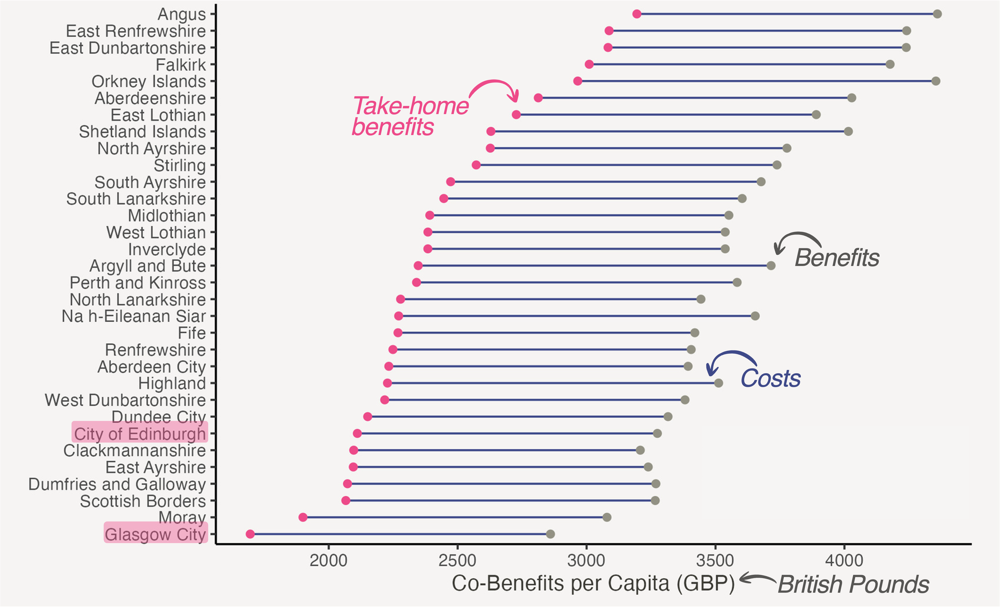
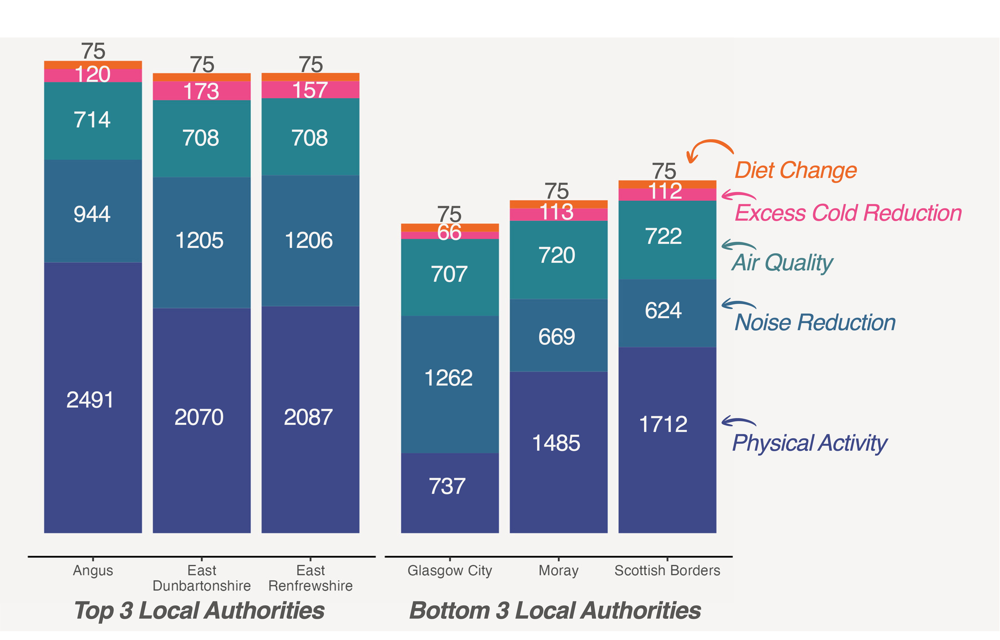

The Urban Dividend Gap - WINNER of the Data Lab Data Visualisation Competition
I feel incredibly grateful and honoured that my entry won the Data Lab Data Visualisation Competition on Exploring Climate Action 2025! After being shortlisted from more than 90 competition entries, I had the opportunity to pitch my infographic to the Data Lab’s judging panel and received the highest scores.
The Urban Dividend Gap - Unmasking Inequity in Scotland’s Net Zero Transition
We are often told that the journey to Net Zero is a universal win for publish health and the economy. But when we look at Scottish data from the Edinburgh Climate Change Institute, we can see a different story.
My data visualisation presents the ‘The Urban Dividend Gap’. For our most populous cities in Scotland, the transition isn’t just a challenge but a double burden. This work targets Scottish Local Council leaders because the story this data tells is one that requires an urgent shift in hoe we fund and prioritise urban city climate action.
To understand this, we first look at the national scale. Figure 1 visualises the benefits and costs of the transition as a dumbbell chart: grey dots (benefits), blue bars (costs), and pink dots (benefits minus costs). By normalising all data per capita, I ensured a fair comparison between Scotland’s 32 local authorities that are rank ordered by ‘take-home benefits’ (pink dots) on the y-axis.
What becomes apparent is that our cities, like Glasgow and Edinburgh, sit at the bottom of the take-home benefit rankings. What we see is that Scotland’s city residents are being asked to pay similar costs of Net Zero for the lowest per-capita rewards in the country.

Figure 1. Benefits vs. Costs of Net Zero per Capita across Scottish Local Authorities
Why do Scottish cities benefit less from Net Zero? The data shows a Composition Gap.
Figure 2 visualises the per capita gains from the 5 largest co-benefit factors (increased physical activity, noise reduction, improved air quality, excess cold reduction, and improved diet quality) for Scotland’s top and bottom local authorities as stacked bar charts.
In car-dependent commuter belts such as Angus, East Dunbartonshire, and East Renfrewshire, the potential for improvement is massive. But in our cities where public transport use is already a baseline, the health rewards for ‘new’ physical activity (dark blue cells) are smaller. This proves that for a city like Glasgow to succeed, our policy cannot rely on transport alone. Instead, we have to unlock the potential in our housing and energy sectors.

Figure 2. Composition of per Capita Gains (GBP) in Top vs. Bottom Local Authorities
So, what does this look like on the ground? When we zoom into Glasgow’s 746 data zones, we see a fractured landscape.
Figure 3 visualises all co-benefits from the Net Zero transition per capita for each small area in Glasgow. The rewards of the transition are pooling in affluent pockets like the West End (show as yellow zones in the top left) while the most vulnerable communities are being left in the shade (purple-coloured data zones).

Figure 3. Glasgow City’s Co-Benefits per Capita across Data Zones
I found the most damming evidence of this equity gap in the housing sector.
Figure 4 visualises the relationship between ‘Excess Cold’ (most important co-benefit factor related to housing) and Scottish Index of Multiple Deprivation Percentile (higher SIMD percentile indicate less deprived areas) as a scatterplot with superimposed line of best fit. Figure 4 clearly shows that the benefit from reducing ‘Excess Cold’ in building is positively correlated with wealth. Current retrofit pathways favour high-value, hard-to-treat historic tenements in wealthy areas such as Newlands or Kelvinside and Jordanhill. This means however that we are effectively bypassing those in the most acute fuel poverty (data zones shown on the lefthand side of the graph). This is a serious threat to a Just Transition for Net Zero.

Figure 4. Excess Cold Reduction vs. Multiple Deprivation across Glasgow’s Data Zones
How do we fix this?
My analysis points to three essential shifts:
Reduce the Urban Burden: We need a ‘City Transition Fund’ to subsidize the complex friction of tenement retrofitting.
Equity-First Retrofits: We must replace existing subsidies with an SIMD-weighted allocation model to ensure benefits flow to the vulnerable.
Targeted Active Travel: We must prioritise infrastructure in our most deprived zones to maximise health dividends where safety is a barrier.
The data is clear. The transition to Net Zero could fuel inequality in Scotland: between urban and rural local authorities, and between wealthy and deprived data zones. But by acknowledging the Urban Dividend Gap, we can transform it into a truly Just Transition.
Let’s ensure that by 2050, the wealthiest residents aren’t the only ones living in warmer homes.
About the Method:
Using the dataset that was provided by The Data Lab, I estimated co-benefits of Scotland’s transition to Net Zero from 2025 to 2050. To ensure fair comparisons between different local authorities and small areas (data zones), I normalised the estimates per capita. I calculated local authority results by aggregating data zones. I assessed spatial inequality by joining the co-benefit data with the Scottish Index of Multiple Deprivation (SIMD).
References: I used geometries from theSpatial Hub Scotland (2025). I accessed data from the Edinburgh Climate Change Institute (2025) and the Scottish Index of Multiple Deprivation (2020). The R code for my analyses is available at: https://github.com/JulianeKloidt/data_viz2025.
Validation Checks:
To provide an indication on the robustness of my results, I performed two validation checks.
Does ‘Excess Cold’ also correlate positively with ‘Wealth’ (higher SIMD percentile) in other Scottish Cities?
Do other co-benefit factors form the housing sector also correlate positively with ‘Wealth’ (higher SIMD percentile)?
Please check out my GitHub repository for the validation code and outputs.
For my first validation check, I visualised the relationship between ‘Excess Cold’ and ‘Wealth’ in Scotland’s next largest cities: Edinburgh, Aberdeen, and Dundee. As for Glasgow, ‘Excess Cold’ and ‘Wealth’ are positively correlated in Edinburgh, Aberdeen, and Dundee. These results prove that inequity in the Net Zero transition is not a Glasgow-only phenomenon.
For my second validation check, I visualised the relationship between ‘Dampness’ (the second biggest co-benefit factor related to housing) and ‘Wealth’ in Glasgow, Edinburgh, Aberdeen, and Dundee. I found no relationship between both variables in Glasgow as well as small negative correlations for the other cities. These results indicate that, when it comes to dampness reduction, more deprived data zones benefit more from Net Zero than less deprived neighbourhoods. The magnitude of benefits however is about 10 times smaller for ‘Dampness” than for ‘Excess Cold’, meaning that the inequality in the housing sector remains highly relevant.
Feedback from the Judges:
I received lots of constructive feedback on my data visualisation from the Data Lab Judging Panel. Although I won the first prize in the competition, there’s still room for improvement: The most prevalent feedback was that the Figure 1 (dumbbell chart) may be difficult to understand and interpret for non-experts. If I were to start this project again, I would therefore opt for a more intuitive chart, perhaps three bar charts presenting the benefits, costs, and take-home benefits, and highlighting the bars for Glasgow and Edinburgh.